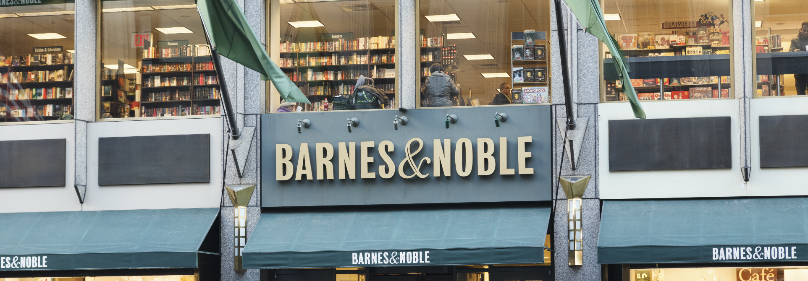

The High Line
I love to walk the high line during fall and when it is close to sunset!

Barnes and Noble
I frequent this place to get my books
Trader Joes
My family's go-to grocery store. They have affordable prices and unique goods!